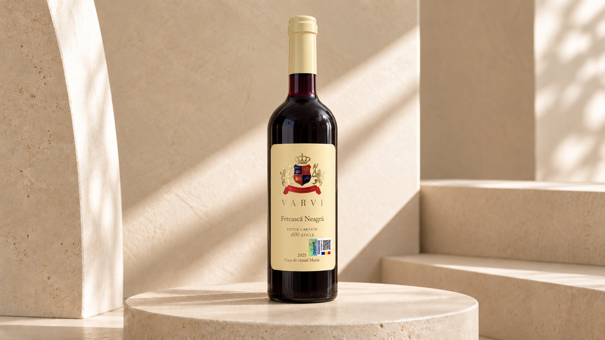

Vin roșu · Ediție limitată
Fetească Neagră
2025
Vinul
Invitat fiind la cramă am răspuns ca un bun creștin, printr-o scurtă telegramă: VIN!
Un vin baricat. 6 luni în baric de stejar. Strugurii provin din Podgoria Siria. Are un tanin mediu, aciditate medie, unde se simt fructele roșii, cireș negru, mocha. Acest vin este un cameleon, datorită felului cum este vinificat.
Fișa vinului
Caracteristici
Se potrivește cu
Carne de pui, legume prăjite, piept de rață, curcan, carne de vită. Când este vorba de Fetească Neagră, totul ține de sosuri. Deci, carne de vită Bourguignon.
- Soi
- Fetească Neagră
- Recolta
- 2025
- Stil
- Vin roșu sec
- Podgorie
- Siria
- Maturare
- 6 luni în baric de stejar
- Alcool
- 13,03% vol.
- Valoare energetică
- 109,5 kcal / 150 ml
- Zahăr
- 2,5 g/L
- Ediție
- Ediție limitată, 600 de sticle
- Temperatura de servire
- 15-18 °C
- Volum
- 750 ml
Conține sulfiți.
Distincție
Medalie de aur
Concursul de vinuri al micilor producători din județul Alba, ediția a XII-a, 2026.
Comenzi
Comandă vin VARVI
Vinurile VARVI se comandă direct de la casa de vinuri, telefonic. Vă ajutăm să alegeți vinurile, confirmăm disponibilitatea și aranjăm personal comanda.
+40 745 612 366 Preferați emailul? Scrieți-ne.Direct de la VARVI. Aranjat personal.